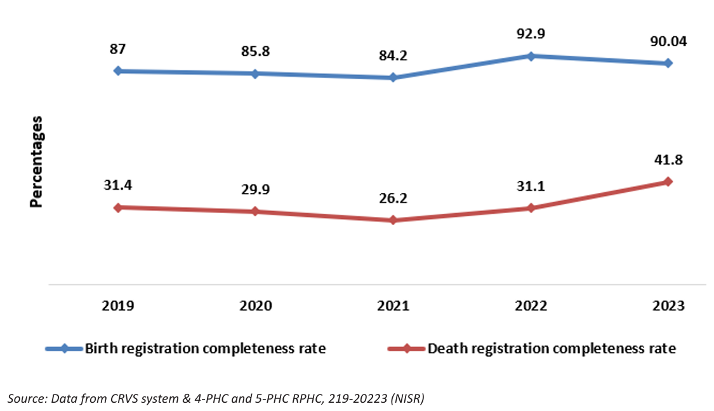
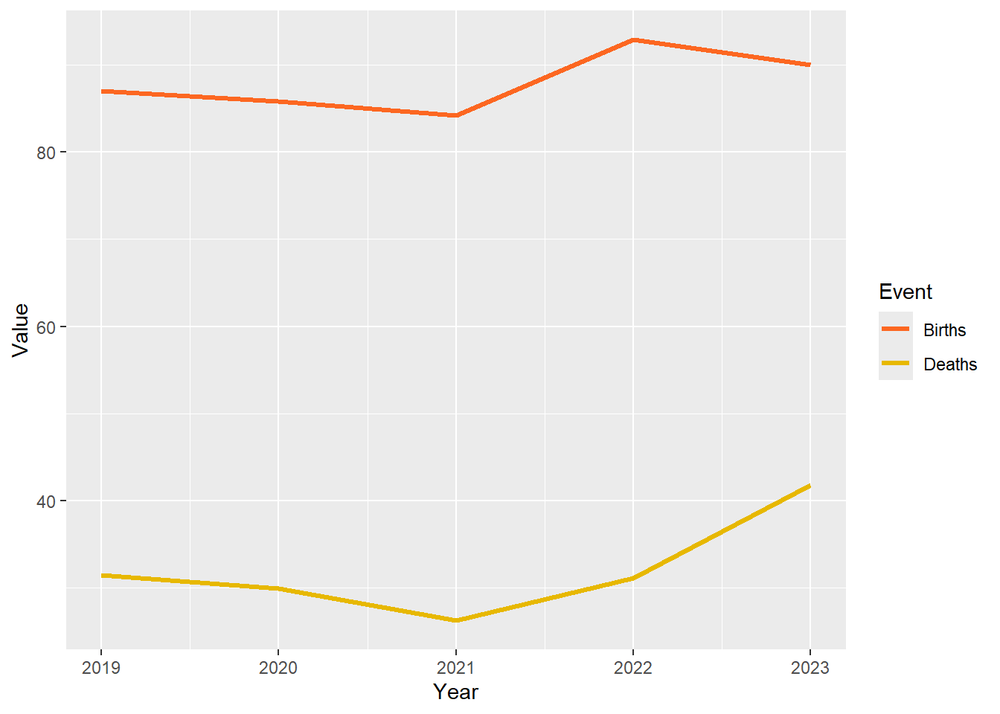
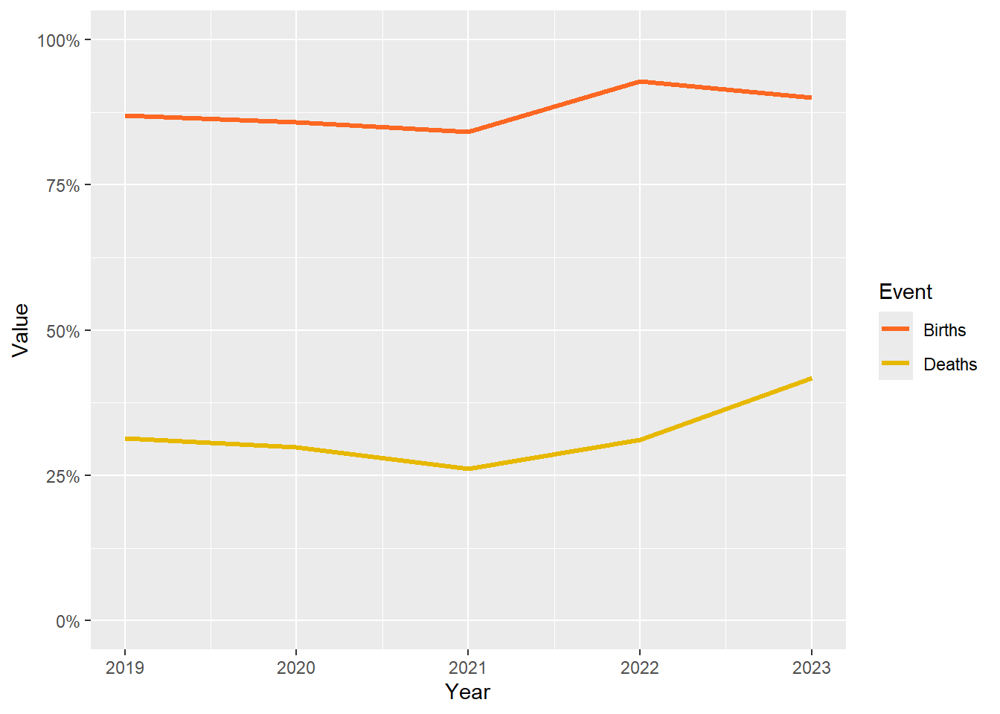
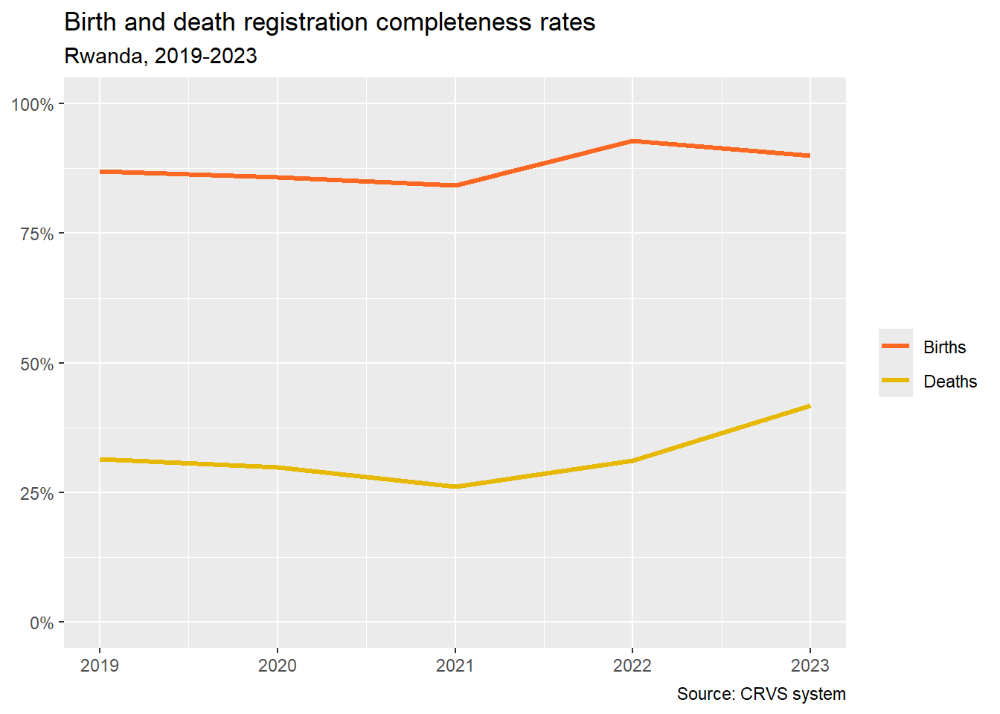
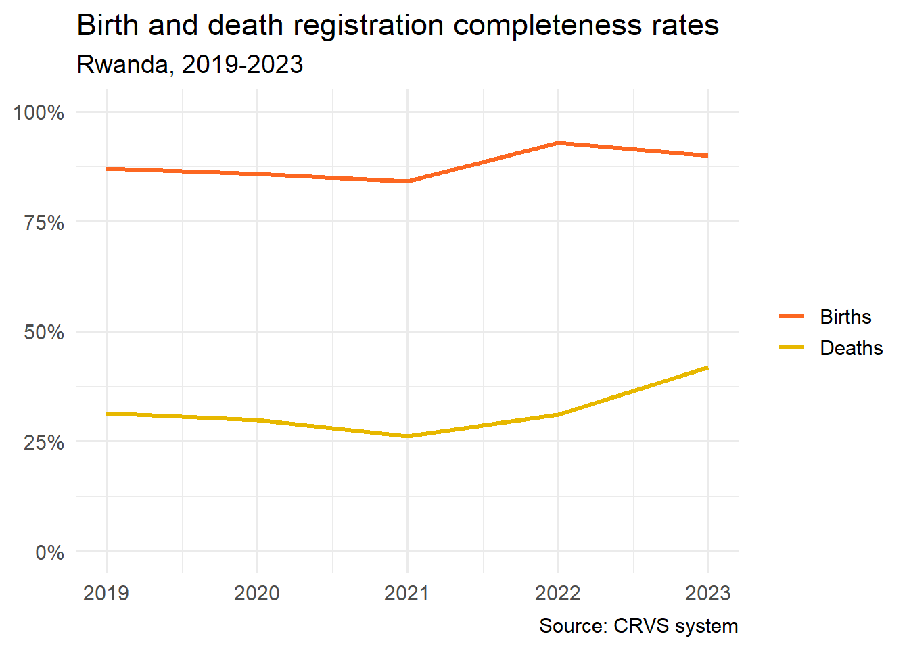
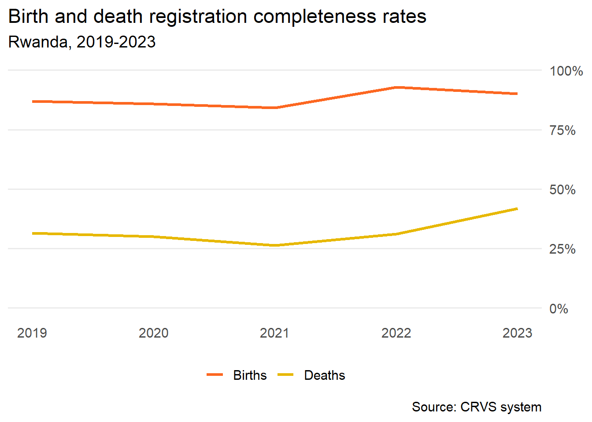
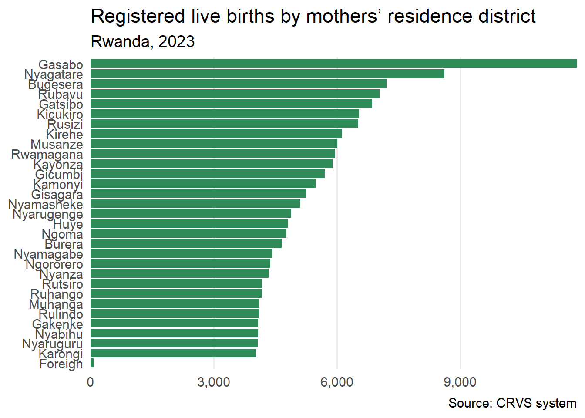
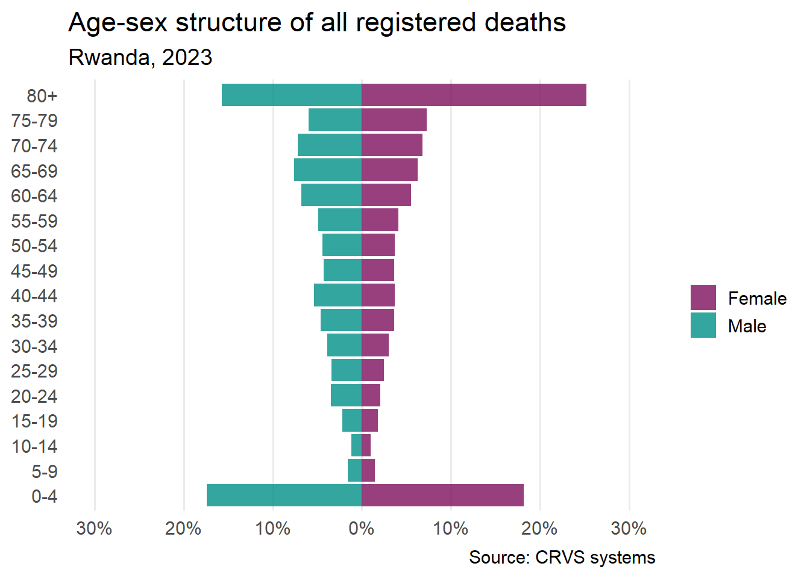

| Event | 2019 | 2020 | 2021 | 2022 | 2023 |
|---|---|---|---|---|---|
| Birth registration completeness rate | 87.0 | 85.8 | 84.2 | 92.9 | 90.0 |
| Death registration completeness rate | 31.4 | 29.9 | 26.2 | 31.1 | 41.8 |
7 Charts
7.1 Introduction
The ggplot2 R package (Wickham 2016) is one of the most popular tools for creating static publication-ready graphics. In this chapter we will run through the process of building a chart in ggplot2 using aggregated civil registration data. We will recreate Figure 7.1 that was published in Rwanda’s 2023 Vital Statistics Report.

We’ll then present the code for a couple of common plots: a bar chart and population pyramid.
7.2 ggplot2
The ggplot2 package is underpinned by the ‘grammar of graphics’ (Wilkinson and Wills 2005). Essentially, every data visualisation has a formal structure with three principle layers: data, aesthetics, and geometry. Variables in your data are mapped to the aesthetic properties (e.g. position, size and colour) of geometric objects like scatter plots or line charts. You can see this in the arguments used by ggplot2:
7.3 Cleaning data
Rwanda’s 2023 Vital Statistics Report is accompanied by an Excel file containing data for all of the figures. Table 7.1 contains all the values encoded in Figure 7.1.
Before we can visualise the data in a line chart we need to transform it from a table into ‘tidy’ data (Wickham 2014). To be tidy the data must satisfy three rules:
- Each variable must have its own column
- Each observation must have its own row
- Each value must have its own cell
The key step to make this data ‘tidy’ is to reshape it into ‘long format’ using the pivot_longer() function from the dplyr package (Wickham et al. 2023). This function converts some of the column names into values of a new variable. In this case, the year column names become the values of a new variable called ‘Year’.
| Event | Year | Value |
|---|---|---|
| Birth registration completeness rate | 2019 | 87.0 |
| Birth registration completeness rate | 2020 | 85.8 |
| Birth registration completeness rate | 2021 | 84.2 |
| Birth registration completeness rate | 2022 | 92.9 |
| Birth registration completeness rate | 2023 | 90.0 |
| Death registration completeness rate | 2019 | 31.4 |
| Death registration completeness rate | 2020 | 29.9 |
| Death registration completeness rate | 2021 | 26.2 |
| Death registration completeness rate | 2022 | 31.1 |
| Death registration completeness rate | 2023 | 41.8 |
Lastly, we need to check that the variables are in the correct format.
Rows: 10
Columns: 3
$ Event <chr> "Birth registration completeness rate", "Birth registration comp…
$ Year <chr> "2019", "2020", "2021", "2022", "2023", "2019", "2020", "2021", …
$ Value <dbl> 87.00, 85.80, 84.20, 92.90, 90.04, 31.40, 29.90, 26.20, 31.10, 4…We can see that the ‘Year’ variable has been stored as a character rather than as a numeric variable. This will cause us problems when we map this variable to the chart’s x-axis. To rectify this we can use the mutate() function to convert ‘Year’ to an integer.
Let’s check to see if that worked.
Rows: 10
Columns: 3
$ Event <chr> "Birth registration completeness rate", "Birth registration comp…
$ Year <int> 2019, 2020, 2021, 2022, 2023, 2019, 2020, 2021, 2022, 2023
$ Value <dbl> 87.00, 85.80, 84.20, 92.90, 90.04, 31.40, 29.90, 26.20, 31.10, 4…While we are formatting the data we might also abbreviate the values contained in the ‘Event’ variable from ‘Birth registration completeness rate’ to simply ‘Births’. We can do this using mutate() and the str_detect() function from the stringr package which detects the presence of a pattern in a string. Here we overwrite the value in the ‘Event’ column with ‘Births’ if we str_detect() the pattern ‘Birth’ and with ‘Deaths’ if we don’t.
Let’s look again at the data.
| Event | Year | Value |
|---|---|---|
| Births | 2019 | 87.0 |
| Births | 2020 | 85.8 |
| Births | 2021 | 84.2 |
| Births | 2022 | 92.9 |
| Births | 2023 | 90.0 |
| Deaths | 2019 | 31.4 |
| Deaths | 2020 | 29.9 |
| Deaths | 2021 | 26.2 |
| Deaths | 2022 | 31.1 |
| Deaths | 2023 | 41.8 |
We are now ready to visualise the data in a line chart.
7.4 Creating a plot
Load the data and map variables
First we pass the data to a ggplot() object and map the ‘Year’ variable to the x-axis, ‘Value’ to the y-axis, and ‘Event’ to colour. Each argument is within the aes() function because the variables are mapped to the aesthetics or visual properties of the line chart. We can see that the values have been mapped to the axes because they have been scaled but there are no lines …
Add lines
To add lines we need to specify a geom. In this case we simply add geom_line().
Note
We are using + rather than the conventional |> because ggplot2 predates the pipe operator.
Change the line width
One of the arguments of geom_line() is linewidth which we can adjust to suit.
Change the line colours
We can specify which colours to map to the values of the ‘Event’ variable using the scale_colour_manual() function. You could also choose a ColorBrewer palette or even colours from a Wes Anderson film. The Okabe-Ito palette is particularly recommended because they are colour-blind friendly.

Format the scale
We can modify the y-axis with arguments from the scale_y_continuous() function. First we need to format the y-axis labels as percentages. There is a handy function from the scales package called label_percent() which we can use. Since the values of the ‘Value’ variable are already percentages we need to add the argument scale = 1 to prevent the function from multiplying by 100.
We can also set the limits of the y-axis to begin at zero and end at 100.

Tip
The :: syntax is a neat way of using a function from another package without needing to load it beforehand with library(scales).
Add labels
Adding labels is very intuitive with the labs() function. You can specify NULL if you don’t want to label a particular part of the chart. Here we have dropped the axis and legend labels but specified a title, subtitle and caption.
ggplot(tidy_data, aes(x = Year, y = Value, colour = Event)) +
geom_line(linewidth = 1.2) +
scale_colour_manual(values = c("Births" = "#fc6721", "Deaths" = "#E7B800")) +
scale_y_continuous(limits = c(0,100), labels = scales::label_percent(scale = 1)) +
labs(x = NULL,
y = NULL,
title = "Birth and death registration completeness rates",
subtitle = "Rwanda, 2019-2023",
caption = "Source: CRVS system",
colour = NULL)
Add a theme
A theme is an overall plot style. Here we use theme_minimal() which removes the grey background and axis ticks. The base_size argument allows us to resize the overall font size of the labels.
ggplot(tidy_data, aes(x = Year, y = Value, colour = Event)) +
geom_line(linewidth = 1.2) +
scale_colour_manual(values = c("Births" = "#fc6721", "Deaths" = "#E7B800")) +
scale_y_continuous(limits = c(0,100), labels = scales::label_percent(scale = 1)) +
labs(x = NULL,
y = NULL,
title = "Birth and death registration completeness rates",
subtitle = "Rwanda, 2019-2023",
caption = "Source: CRVS system",
colour = NULL) +
theme_minimal(base_size = 14)
Final tweaks
Next we’ll remove unnecessary grid lines and move the legend to the bottom of the plot. There are several other options available using the theme() function.
We can also move the y-axis labels to the right side so that the latest values are easier to read. This is achieved by adding the argument position = "right" in the scale_y_continuous() function.
ggplot(tidy_data, aes(x = Year, y = Value, colour = Event)) +
geom_line(linewidth = 1.2) +
scale_colour_manual(values = c("Births" = "#fc6721", "Deaths" = "#E7B800")) +
scale_y_continuous(limits = c(0,100), labels = scales::label_percent(scale = 1), position = "right") +
labs(x = NULL,
y = NULL,
title = "Birth and death registration completeness rates",
subtitle = "Rwanda, 2019-2023",
caption = "Source: CRVS system",
colour = NULL) +
theme_minimal(base_size = 14) +
theme(
panel.grid.major.x = element_blank(),
panel.grid.minor = element_blank(),
legend.position = "bottom"
)
Tip
You can add expand = expansion() in scale_y_continuous to reduce the gap between the x-axis labels and the axis line.
Save the plot
Lastly we can export the plot as a PNG and set the resolution to 300 dpi which is perfect for printing.
7.5 Other chart types
The ggplot2 package is extremely versatile and be used to create all sorts of data visualisations. A couple of examples are shown below using data published alongside Rwanda’s 2023 Vital Statistic report. Comments have been added to the code to help explain the additional steps involved.
7.5.1 Bar charts
The bar chart ranks the districts of Rwanda by the count of recorded live births in 2023. It is a simple alternative to a choropleth map requiring little data transformation or additional code except the use of geom_col().
| District | Value |
|---|---|
| Bugesera | 7212 |
| Burera | 4651 |
| Gakenke | 4086 |
| Gasabo | 11837 |
| Gatsibo | 6855 |
| Gicumbi | 5699 |
ggplot(births_by_district, aes(x = Value, y = forcats::fct_reorder(District, Value))) +
geom_col(fill = "seagreen") +
scale_x_continuous(expand = expansion(), labels = scales::comma) +
labs(x = NULL, y = NULL,
title = "Registered live births by mothers’ residence district",
subtitle = "Rwanda, 2023",
caption = "Source: CRVS system") +
theme_minimal(base_size = 14) +
theme(
panel.grid.major.y = element_blank(),
panel.grid.minor = element_blank()
)
7.5.2 Population pyramid
There is no specific geom for creating population pyramids in ggplot2. Here we create a back-to-back bar chart using geom_col(). You will notice that we change the values of ‘Male’ to negative so that they map to the x-axis in reverse.
| Age | Sex | Value |
|---|---|---|
| 0-4 | Female | 18.2 |
| 0-4 | Male | 17.4 |
| 5-9 | Female | 1.5 |
| 5-9 | Male | 1.6 |
| 10-14 | Female | 1.0 |
| 10-14 | Male | 1.2 |
ggplot(deaths,
# change values of 'Male' to negative
aes(x = ifelse(Sex == "Male", -Value, Value),
y = Age, fill = Sex)) +
# adjust transparency
geom_col(alpha = 0.8) +
scale_x_continuous(
# set x-axis limits
limits = c(-30, 30),
# set x-axis scale
breaks = seq(-30, 30, 10),
# add % sign to x-axis labels
labels = function(x) {paste0(abs(x), '%')}
) +
# choose appropriate colours
scale_fill_manual(values = c("Female" = "#7E105E", "Male" = "#009087")) +
labs(x = NULL, y = NULL,
title = "Age-sex structure of all registered deaths",
subtitle = "Rwanda, 2023",
caption = "Source: CRVS systems",
# drop legend title
fill = "") +
theme_minimal(base_size = 14) +
theme(
panel.grid.major.y = element_blank(),
panel.grid.minor = element_blank()
)